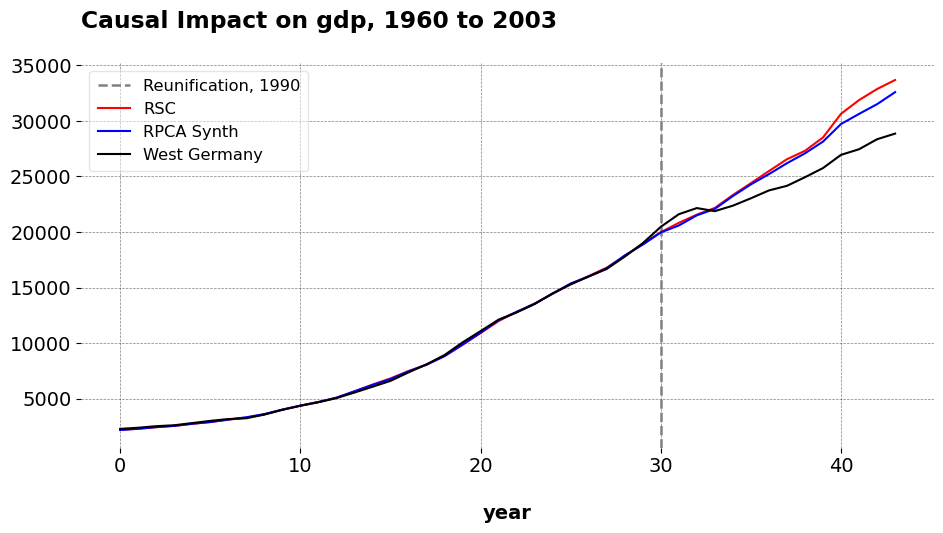

This will be a short blog post. I’ve spent the last two months doing a little industry work in the marketing realm, and in the meantime I made some substantial changes to mlsynth. This blog post simply shows one of the new key features I have implemented.
Chances are if you’re reading this, you know what I mean by the notion of SUTVA, or the stable unit treatment value assumption. It is the idea that if we care about the causal impact of a treatment on one unit, but other units are affected by the treatment or otherwise experience a similar treatment, that this exposure confounds our treatment effect with respect to the original unit we do care about. Say we wish to study the impact of German Reunification on West Germany’s GDP. We know West Germany was exposed, but what about neighboring nations like Austria or France? What if the reunification had regional effects? Analysts therefore have a problem: Austria and France may be very similar to West Germany, and therefore informative of West Germany’s counterfactual, but we are concerned they are exposed or affected by the main treatment of interest. What do we do? Before, researchers would need to drop these units or argue for their inclusion/exclusion, despite them being treated. Now, we do not need to do that, as SCM has a few approaches that deal with spillovers (this post covers just one). The approach, called iterative synthetic controls, is deceptively simple.
Suppose Austria and France are partly treated. Step one of iSCM is to estimate a synthetic control for Austria, including France as a donor but excluding West Germany. Which SCM flavor you ask? Any one you like! For the purposes of this post, we will be using the Robsut SCM and the Robust PCA SCM methods from mlsynth. The precise details are not really important, but you may read the docs should you like. We then take the model predictions for Austria across the full pre and post period and replace the original Austria with the synthetic control values that the model predicts for Austria.
Next, we do France: using the cleaned up Austria as a donor, we estimate the synthetic control for France, using the now-cleaned up Austria and the remaining donor pool units. As before, we replace the values for the original France (in the original dataset) with the new synthetic France. We now have cleaned up our two donors that may be exposed to the treatment.
Now, with these two cleaned donors, we estimate the counterfactual for West Germany, with our 14 totally unexposed donors and the two now cleaned up donors that were once partially exposed.
Estimation in Python
“But Jared!”, you will say, this seems like a lot of looping and lots of donor tracking. Well fear not, that is what mlsynth is for. In order to get these results, you need Python (3.9 or greater) and mlsynth, which you may install from the Github repo. You’ll need the most recent version.
First we estimate the orignal model. You will find our handy-dandy util function iterative_scm is now imported.
import pandas as pdfrom mlsynth import CLUSTERSCfrom mlsynth.utils.spillover import iterative_scm# Load the reunification dataseturl ="https://raw.githubusercontent.com/jgreathouse9/mlsynth/main/basedata/german_reunification.csv"df = pd.read_csv(url)# Define configuration for CLUSTERSCconfig = {"df": df,"outcome": "gdp", # per capita GDP"treat": "Reunification", # binary treatment indicator"unitid": "country", # country name"time": "year", # time variable"display_graphs": True, # display counterfactual plots"save": False,"counterfactual_color": ["red", "blue"],"Frequentist": True, "method": "BOTH"}originalresult = CLUSTERSC(config).fit()

These are the original results., You may check them against my coworker’s dissertation if you wish. Now we see how sensitive the results are to adjusting for spillover effects.
You pass the original config to the util function, and you pass a list of strings that denote which units we believe are partly treated. Form there, the algorithm under the hood handles the donor cleaning, and returns back the results of the final SCM run with both donors cleaned. Note that if you want both PCR and RPCA cleaning, we pass it as method="BOTH" to iterative_scm. We can see that the results are very similar to the original SCM. The pre-treatment fits degrade only very slightly (even more so with the Robust PCA method, highlighting its robustness to tiny tweaks in the model). Speaking of RPCA, the new weights are ‘Belgium’: 0.271, ‘Norway’: 0.552, ‘New Zealand’: 0.34, whereas before they were ‘Austria’: 0.023, ‘France’: 0.354, ‘Norway’: 0.485, ‘New Zealand’: 0.296. Austria goes away as a weighed donor, but there’s not very much change in the pre-treatment fit or the practical conclusions we draw from the analysis. When we use only Austria as the cleaned unit, RPCA’s weights are ‘UK’: 0.237, ‘France’: 0.607, ‘Norway’: 0.191, ‘New Zealand’: 0.12 with an ATT of -1536.355. When we use only France, the ATT is -1490.636 and the weights are ‘Austria’: 0.262, ‘Denmark’: 0.004, ‘Norway’: 0.517, ‘New Zealand’: 0.378. Of course, the key aspect of this procedure is knowing which units are likely to have spillover effects
Comments
So, this is not the only way to do this. There are plentyofother methods that people have developed for this purpose too. I likely will not program all of thse myself into mlsynth, but others who are so inclined are welcome to assist in the effort! in the future, I’ll also allow you to switch between the options for each kind of spillover management (the inclusive method versus the iterative method, for example). But, now you know how to use this for your own work. As usual, comments or suggestions are always appreciated.
Comments
So, this is not the only way to do this. There are plenty of other methods that people have developed for this purpose too. I likely will not program all of thse myself into
mlsynth, but others who are so inclined are welcome to assist in the effort! in the future, I’ll also allow you to switch between the options for each kind of spillover management (the inclusive method versus the iterative method, for example). But, now you know how to use this for your own work. As usual, comments or suggestions are always appreciated.